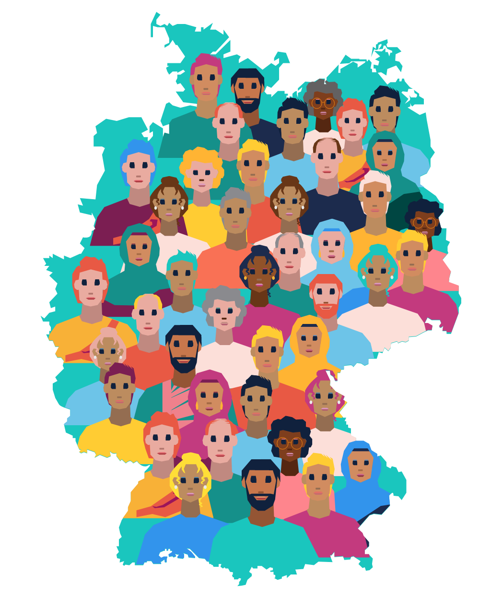
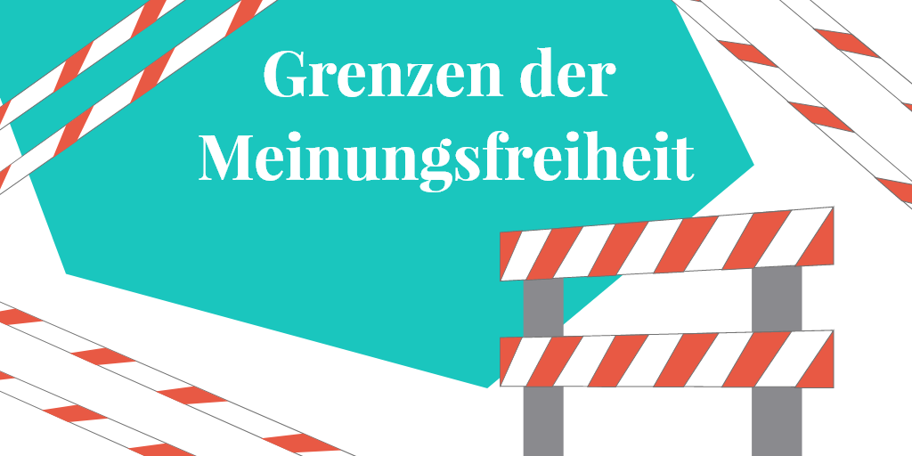
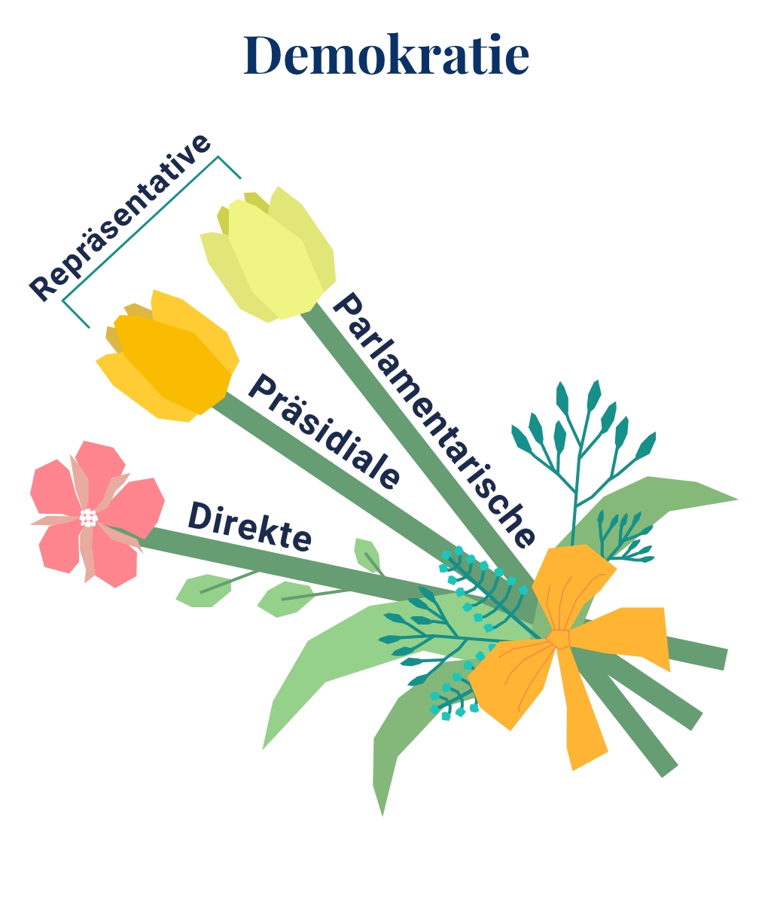
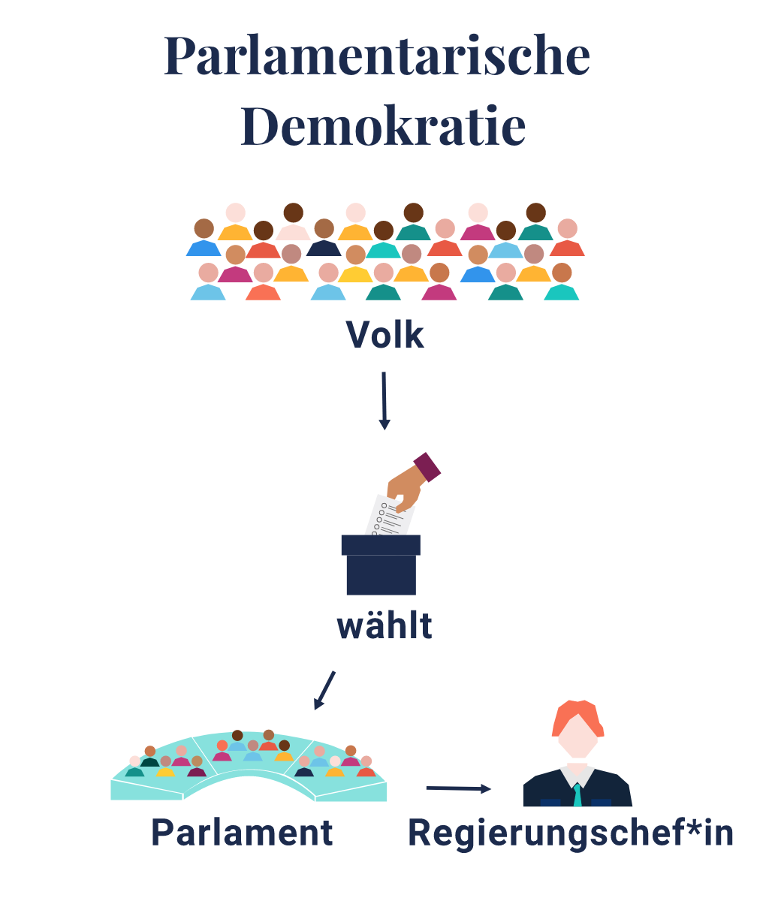
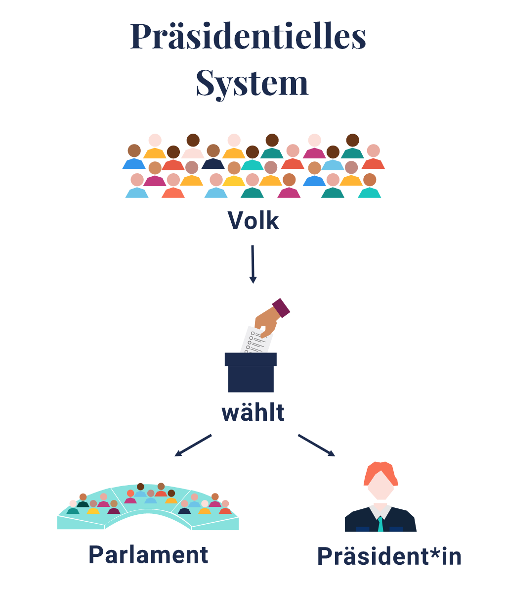
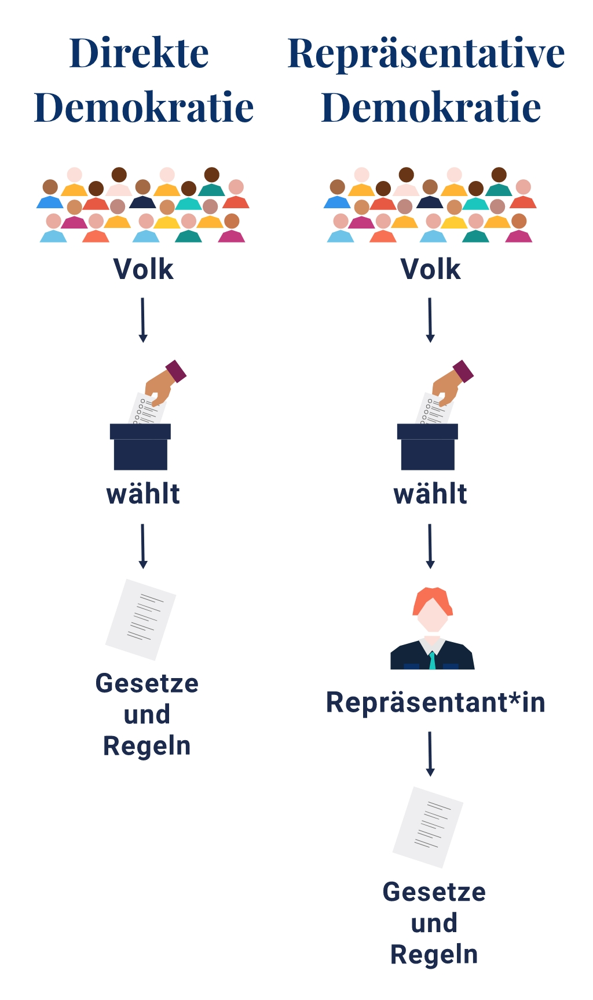

Was ist Demokratie?
„Wir leben in einer Demokratie", das hört man oft.
In dieser Station lernen wir zusammen viel über Demokratie:
- Was bedeutet das?
- Was sind die Kernelemente der Demokratie?
- Welche Arten von Demokratie gibt es?
„Wir leben in einer Demokratie", das hört man oft.
In dieser Station lernen wir zusammen viel über Demokratie:
Demokratie ist eine Form der Herrschaft in einem Staat. Es gibt viele unterschiedliche Herrschaftsformen, wie Monarchie, Autokratie, Diktatur, Anarchie, Oligarchie, Sozialismus usw.
Das Wort Demokratie stammt aus dem Griechischen und bedeutet „Volksherrschaft".
In der Demokratie kann jeder Bürger eines Landes darüber entscheiden, was in diesem Land passiert. Das Volk übt die Herrschaft aus. Politische Entscheidungen werden nach dem Willen der Mehrheit der Bevölkerung getroffen.

Was gehört alles zu einer Demokratie?
Was sind die Kernelemente einer Demokratie?
Genau, du hast vieles richtig geraten.
Das Wahlrecht ist dabei einer der Grundpfeiler des Systems. Es muss auch immer verschiedene Parteien geben, die gewählt werden können.
Die heutige Demokratie hat ihren Ursprung im antiken Griechenland. Aber wenn wir heute von Demokratie sprechen, dann meinen wir nicht genau das Gleiche wie damals. Der größte Unterschied ist das Wahlrecht, das damals sehr eingeschränkt war.
Viele Bürger vor allem die Frauen hatten kein Wahlrecht. Außerdem gab es damals kein Parlament und keine Parteien.
Das heißt, in der modernen Demokratie dürfen alle Menschen frei ihre Meinung sagen, sich versammeln und sich informieren.

Es gibt unterschiedliche Parteien, die ihre Vorstellungen in sogenannten Parteiprogrammen kundtun. In der modernen Demokratie wählen die Bürger*innen Personen und Parteien, von denen sie eine bestimmte Zeit lang regiert werden wollen. Und wenn die Regierung ihre Arbeit schlecht macht, kann das Volk bei der nächsten Wahl eine andere Regierung wählen.
Stimmt! In Deutschland gibt so viele Parteien!
Demokratie bedeutet außerdem, dass es eine Verfassung und Gesetze gibt.
Das heißt schriftlich festgehaltene politische und rechtliche Regeln. Sie sind die Basis für die Rechtsstaatlichkeit, welche einen wichtigen demokratischen Wert in Deutschland darstellt.
Außerdem gibt es auch andere Kernelemente, wie Grundrechte. Die Grundrechte schützen den Freiheitsraum jedes Einzelnen.
Sie sind in Deutschland in den Artikeln 1 bis 19 des Grundgesetzes festgelegt - aber auch in Urteilen des Verfassungsgerichts oder in der Europäischen Menschenrechtskonvention.
Jetzt habe ich ein kleines Quiz für dich. Welche Rechte gehören zu den Grundrechten?
Es gibt noch weitere Grundrechte. Die genaue Beschreibung können wir im Grundgesetz finden!
Beim Freiheitsrecht spielt die Meinungsfreiheit eine gewichtige Rolle. Es heißt:
„Jeder hat das Recht, seine Meinung in Wort, Schrift und Bild frei zu äußern und zu verbreiten."

Auch in Demokratien hat jedoch die Meinungsfreiheit Grenzen. Aber was sind diese Grenzen?

Durch die Meinungsfreiheit entstehen vielfältige Meinungen. In demokratischen Gesellschaften wird viel Wert auf Toleranz gelegt.
Darüber hinaus ist die Rolle der Medien sehr wichtig in einer Demokratie. Deshalb spricht man von Freiheit der Medien.
Informationen frei verbreiten zu können und zu Informationen freien Zugang zu haben sind Grundpfeiler der Demokratie. Aus diesem Grund ist in demokratischen Ländern die Pressefreiheit ein Grundrecht.
Das heißt, die Massenmedien sind vielfältig und unabhängig.
Außerdem sollte man auch wissen, trotz vieler Gemeinsamkeiten haben demokratisch organisierte Staaten Unterschiede.
Kennst du die bekanntesten Formen der Demokratie?

Parlamentarische Demokratie ist eine Form der Demokratie, die wir in Deutschland haben. Die parlamentarische Demokratie ist eine Regierungsform, bei der nicht die Bürger über die Politik entscheiden, sondern das von ihnen gewählte Parlament.

Das Parlament ist dafür verantwortlich, im Namen des Volkes Gesetze zu erstellen, politische Entscheidungen zu treffen und die Regierung zu überwachen.
Außerdem wählt das Parlament den Regierungschef (Bundeskanzler/Premierminister).
Sara hat eine Freundin, die in den USA wohnt. In den USA gibt es eine präsidentielle Demokratie. Sie hat Sara die Demokratie in den USA so erklärt:

Die Leute dürfen Vertreter für das Parlament oder den Kongress wählen. In einer zweiten Wahl geben die Menschen an Wahlmänner ihre Stimme ab, die dann über den Präsidenten abstimmen.
Der Präsident ist gleichzeitig Staatsoberhaupt, Regierungschef und außerdem Oberbefehlshaber der Streitkräfte. Der Präsident ernennt dann selbst seine Regierung.
So sind Parlament und Regierung voneinander getrennt.
Ein Freund von Edris aus der Schweiz hat ihm die Demokratie anders erklärt. Denn da gibt es direkte Demokratie.

Direkte Demokratie heißt, dass die Menschen durch Volksentscheide mitbestimmen können, welche Gesetze die Politik machen soll.
Man stimmt auch über das Parlament, die sogenannte Bundesversammlung ab. Das Parlament wählt die Regierung, den siebenköpfigen Bundesrat und den Bundeskanzler.
Der Bundesrat ist eine Behörde, die der Bundespräsident leitet. Unterstützung erhält sie zusätzlich vom Bundeskanzler samt Bundeskanzlei.
Gemeinsam führen sie politische Entscheidungen aus. Hier gibt es kein richtiges Staatsoberhaupt. Bundeskanzler und Bundespräsident sind lediglich Leiter ihrer Abteilung.
Juhu du hast es geschafft. Jetzt weißt du schon genauer was eine Demokratie ausmacht.
Wir haben auch eine Station zu Demokratie in Deutschland!